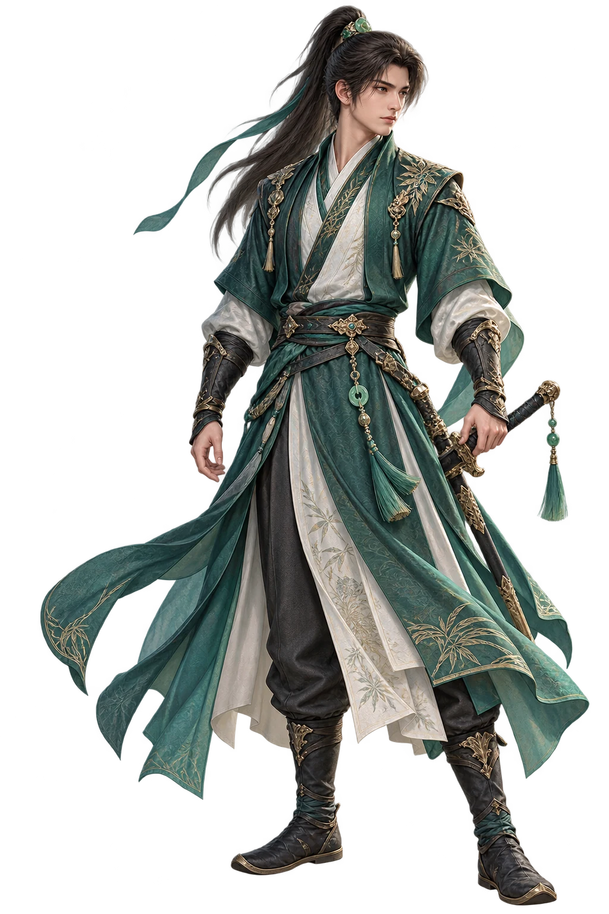

CHAIN OF LIFE
壺中世界 · 崑崙秘境
踏入壺中世界
›
重返九藜大地 ｜ 滑鼠點擊移動・即時戰鬥
CREATE YOUR ADVENTURER
選擇你的身影
三族初臨崑崙，命運將由此展開
人
人族
均衡 · 守序而堅韌
天
天人
靈慧 · 通曉五行術法
修
修羅
迅猛 · 力量與速度並存
初始修行
劍客
藥師
陰陽師
開始旅程
›
返回

無名旅人
劍客
氣
100 / 100
法
70 / 70
經
Lv. 1
目前目標
山野精怪
♫
地圖
背包
點擊
E
與人物交談
新生指導員
×
繼續
›
附近
隊伍
系統
系統
歡迎來到崑崙秘境。
指導員
旅人，壺中世界正等著你的到來。
›
送出
崑崙秘境
座標 240, 180
跑
快捷列 1–8 ｜ Q 攻擊 ｜ R 跑步
頁 1 / 10
×